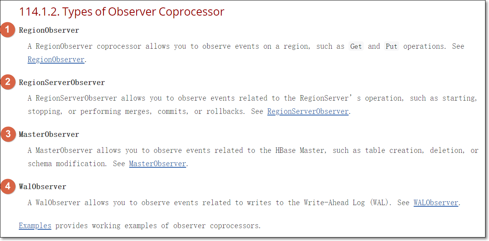
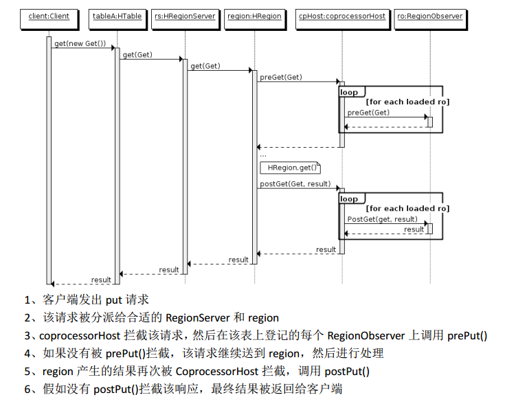
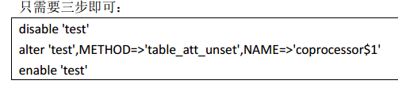
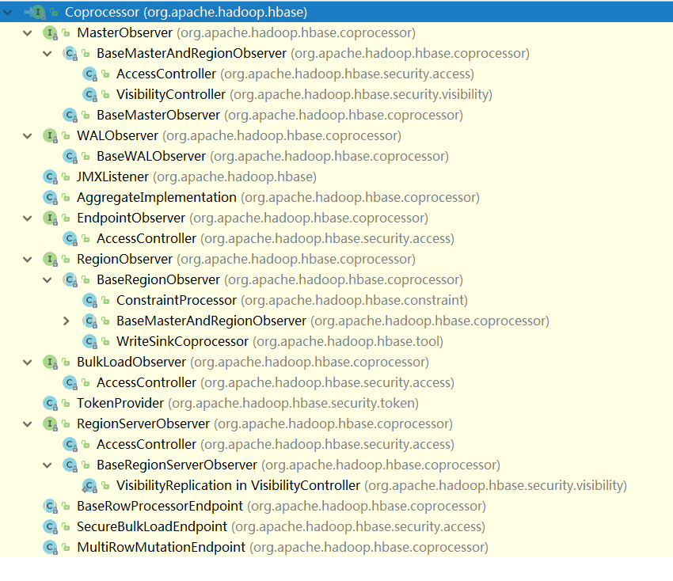
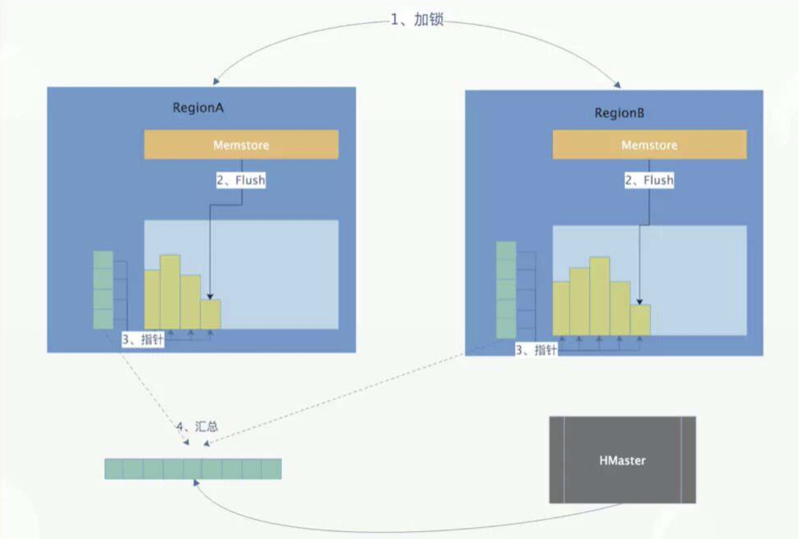
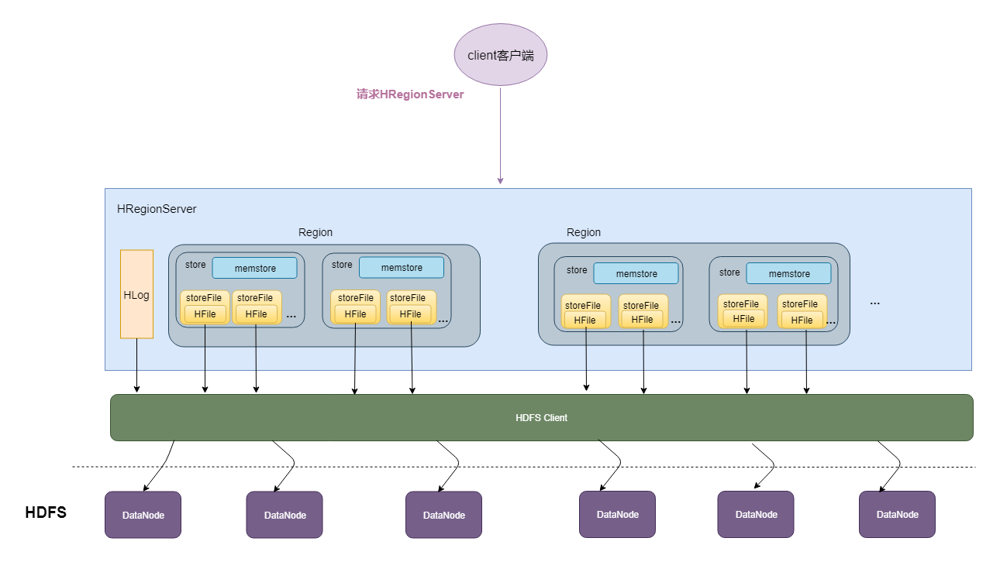
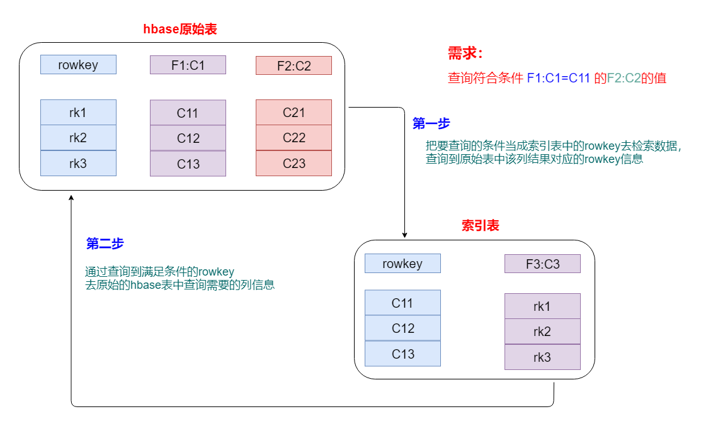

大数据数据库之HBase
1. HBase协处理器
- http://hbase.apache.org/book.html#cp
- 起源：
- Hbase 作为列族数据库最经常被人诟病的特性包括：无法轻易建立“二级索引”，难以执行求和、计数、排序等操作。比如，在旧版本的(<0.92)Hbase 中，统计数据表的总行数，需 要使用 Counter 方法，执行一次 MapReduce Job 才能得到。
- 虽然 HBase 在数据存储层中集成了 MapReduce，能够有效用于数据表的分布式计算。然而在很多情况下，做一些简单的相加或者聚合计算的时候， 如果直接将计算过程放置在 server端，能够减少通讯开销，从而获得很好的性能提升。
- 于是， HBase 在 0.92 之后引入了协处理器(coprocessors)，实现一些激动人心的新特性：能够轻易建立二次索引、复杂过滤器(谓词下推)以及访问控制等。
1.1 两种协处理器
- 协处理器有两种：observer和endpoint
1.1.1 observer
- Observer 类似于传统数据库中的触发器，当发生某些事件的时候这类协处理器会被 Server 端调用。
Observer Coprocessor就是一些散布在 HBase Server 端代码中的 hook 钩子， 在固定的事件发生时被调用。
- 比如： put 操作之前有钩子函数 prePut，该函数在put操作执行前会被Region Server调用；在 put 操作之后则有 postPut 钩子函数
以 HBase0.92 版本为例，它提供了三种观察者接口：
- RegionObserver：提供客户端的数据操纵事件钩子： Get、 Put、 Delete、 Scan 等。
- WALObserver：提供 WAL 相关操作钩子。
- MasterObserver：提供 DDL类型的操作钩子。如创建、删除、修改数据表等。
- 到 0.96 版本又新增一个 RegionServerObserver

- 下图是以 RegionObserver 为例子讲解 Observer 这种协处理器的原理：

1.1.2 endpoint
- Endpoint协处理器类似传统数据库中的存储过程，客户端可以调用这些 Endpoint 协处理器执行一段 Server 端代码，并将 Server 端代码的结果返回给客户端进一步处理
- 最常见的用法就是进行聚集操作。
- 如果没有协处理器，当用户需要找出一张表中的最大数据，即max 聚合操作，就必须进行全表扫描，在客户端代码内遍历扫描结果，并执行求最大值的操作。
- 这样的方法无法利用底层集群的并发能力，而将所有计算都集中到 Client 端统一执 行，势必效率低下。
- 利用 Coprocessor，用户可以将求最大值的代码部署到 HBase Server 端，HBase将利用底层cluster 的多个节点并发执行求最大值的操作。即在每个 Region范围内执行求最大值的代码，将每个 Region 的最大值在 Region Server 端计算出，仅仅将该 max 值返回给客户端。
- 在客户端进一步将多个 Region 的最大值进一步处理而找到其中的最大值。这样整体的执行效率就会提高很多
1.1.3 总结
- Observer允许集群在正常的客户端操作过程中可以有不同的行为表现
- Endpoint 允许扩展集群的能力，对客户端应用开放新的运算命令
- observer 类似于 RDBMS 中的触发器，主要在服务端工作
- endpoint 类似于 RDBMS 中的存储过程，主要在 client 端工作
- observer 可以实现权限管理、优先级设置、监控、 ddl 控制、 二级索引等功能
- endpoint 可以实现 min、 max、 avg、 sum、 distinct、 group by 等功能
1.2 协处理器加载方式
- 协处理器的加载方式有两种
- 静态加载方式（ Static Load）；静态加载的协处理器称之为 System Coprocessor
- 动态加载方式 （ Dynamic Load）；动态加载的协处理器称 之为 Table Coprocessor
1.2.1 静态加载
- 通过修改 hbase-site.xml 这个文件来实现， 如启动全局 aggregation，能过操纵所有的表数据。只需要在hbase-site.xml里面添加以下配置即可
- ==注意==：修改完配置之后需要重启HBase集群
1 | <property> |
- 为所有table加载了一个 cp class，可以用” ,”分割加载多个 class，修改
1.2.2 动态加载
- 启用表aggregation，只对特定的表生效。
- 通过 HBase Shell 来实现。
- disable 指定表。
1 | hbase> disable 'mytable' |
- 添加 aggregation
1 | hbase> alter 'mytable', METHOD => 'table_att','coprocessor'=>'|org.apache.Hadoop.hbase.coprocessor.AggregateImplementation||' |
- 重启指定表
1 | hbase> enable 'mytable' |
协处理器卸载

1.3 协处理器Observer实战

- 通过协处理器Observer实现向hbase当中一张表插入数据时，通过协处理器，将数据复制一份保存到另外一张表当中去；但是只取第一张表当中的部分列数据，保存到第二张表当中去
1.3.1 创建第一张表proc1
- 打开hbase shell
1 | cd //install/hbase-1.2.0-cdh5.14.2/ |
- 在HBase当中创建一张表，表名user2，并只有一个列族info
1 | create 'proc1','info' |
1.3.2 创建第二张表proc2
- 创建第二张表proc2，作为目标表
- 将第一张表当中插入数据的部分列，使用协处理器，复制到proc2表当中来
1 | create 'proc2','info' |
1.3.3 开发HBase协处理器
- 创建maven工程所用的repositories、dependencies、plugins跟之前的一样
1 | <repositories> |
- 开发HBase的协处理器
1 | package com.kaikeba.hbase.cp; |
1.3.4 将项目打成jar包，并上传到HDFS上面
- 将我们的协处理器打成一个jar包，此处不需要用任何的打包插件即可
- 然后将打好的jar包上传到linux的/kfly/install路径下
- 再将jar包上传到HDFS
1 | cd /kfly/install |
1.3.5 将jar包挂载到proc1表
1 | describe 'proc1' |
- 再次查看’proc1’表；可以查看到我们的卸载器已经加载了
1 | describe 'proc1' |
1.3.6 向proc1表添加数据
1 | package com.kaikeba.hbase.cp.test; |
- 注意：如果需要卸载我们的协处理器，那么进入hbase的shell命令行，执行以下命令即可
1 | disable 'proc1' |
2. HBase表的rowkey设计
- rowkey设计三原则
2.1 rowkey长度原则
- rowkey是一个二进制码流，可以是任意字符串，最大长度64kb，实际应用中一般为10-100bytes，以byte[]形式保存，一般设计成定长。
- 建议尽可能短；但是也不能太短，否则rowkey前缀重复的概率增大
- 设计过长会降低memstore内存的利用率和HFile存储数据的效率。
2.2 rowkey散列原则
- 建议将rowkey的高位作为散列字段，这样将提高数据均衡分布在每个RegionServer，以实现负载均衡的几率。
- 如果没有散列字段，首字段直接是时间信息。所有的数据都会集中在一个RegionServer上，这样在数据检索的时候负载会集中在个别的RegionServer上，造成热点问题，会降低查询效率。
2.3 rowkey唯一原则
- 必须在设计上保证其唯一性，rowkey是按照字典顺序排序存储的
- 因此，设计rowkey的时候，要充分利用这个排序的特点，可以将经常读取的数据存储到一块，将最近可能会被访问的数据放到一块
- 下图为电信上网详单数据，保存在HBase的一个应用场景
3. HBase表的热点
3.2 什么是热点
- 检索habse的记录首先要通过row key来定位数据行。
- 当大量的client访问hbase集群的一个或少数几个节点，造成少数region server的读/写请求过多、负载过大，而其他region server负载却很小，就造成了“热点”现象。
3.2 热点的解决方案
3.2.1 预分区
- 预分区的目的让表的数据可以均衡的分散在集群中，而不是默认只有一个region分布在集群的一个节点上。
3.2.3 加盐
- 这里所说的加盐不是密码学中的加盐，而是在rowkey的前面增加随机数，具体就是给rowkey分配一个随机前缀以使得它和之前的rowkey的开头不同
3.2.4 哈希
- 哈希会使同一行永远用一个前缀加盐。哈希也可以使负载分散到整个集群，但是读却是可以预测的。使用确定的哈希可以让客户端重构完整的rowkey，可以使用get操作准确获取某一个行数据。
1 | rowkey=MD5(username).subString(0,10)+时间戳 |
3.2.4 反转
- 反转固定长度或者数字格式的rowkey。这样可以使得rowkey中经常改变的部分（最没有意义的部分）放在前面。
- 这样可以有效的随机rowkey，但是牺牲了rowkey的有序性。
1 | 电信公司： |
4. HBase的数据备份
4.1 基于HBase提供的类对表进行备份
使用HBase提供的类把HBase中某张表的数据导出到HDFS，之后再导出到测试hbase表中。
(1) ==从hbase表导出到HDFS==
1
[hadoop@node01 shells]$ hbase org.apache.hadoop.hbase.mapreduce.Export myuser /hbase_data/myuser_bak
(2) ==文件导入hbase表==
hbase shell中创建备份目标表
1
create 'myuser_bak','f1','f2'
将HDFS上的数据导入到备份目标表中
1
hbase org.apache.hadoop.hbase.mapreduce.Driver import myuser_bak /hbase_data/myuser_bak/*
补充说明
以上都是对数据进行了全量备份，后期也可以实现表的增量数据备份，增量备份跟全量备份操作差不多，只不过要在后面加上时间戳。
例如：
HBase数据导出到HDFS1
hbase org.apache.hadoop.hbase.mapreduce.Export test /hbase_data/test_bak_increment 开始时间戳 结束时间戳
4.2 基于snapshot快照对表进行备份
通过snapshot快照的方式实现HBase数据的迁移和拷贝。这种方式比较常用，效率高，也是最为推荐的数据迁移方式。
HBase的snapshot其实就是一组==metadata==信息的集合（文件列表），通过这些metadata信息的集合，就能将表的数据回滚到snapshot那个时刻的数据。
- 首先我们要了解一下所谓的HBase的LSM类型的系统结构，我们知道在HBase中，数据是先写入到Memstore中，当Memstore中的数据达到一定条件，就会flush到HDFS中，形成HFile，后面就不允许原地修改或者删除了。
- 如果要更新或者删除的话，只能追加写入新文件。既然数据写入以后就不会在发生原地修改或者删除，这就是snapshot做文章的地方。做snapshot的时候，只需要给快照表对应的所有文件创建好指针（元数据集合），恢复的时候只需要根据这些指针找到对应的文件进行恢复就Ok。这是原理的最简单的描述，下图是描述快照时候的简单流程：

4.3 快照实战
- 1、创建表的snapshot
1 | snapshot 'tableName', 'snapshotName' |
2、查看snapshot
1
list_snapshots
查找以test开头的snapshot
1 | list_snapshots 'test.*' |
- 3、恢复snapshot
ps:这里需要对表进行disable操作，先把表置为不可用状态，然后在进行进行restore_snapshot的操作
1 | disable 'tableName' |
4、删除snapshot
1
delete_snapshot 'snapshotName'
5、迁移 snapshot
1
2
3
4
5
6
7
8
9
10
11
12
13
14hbase org.apache.hadoop.hbase.snapshot.ExportSnapshot \
-snapshot snapshotName \
-copy-from hdfs://src-hbase-root-dir/hbase \
-copy-to hdfs://dst-hbase-root-dir/hbase \
-mappers 1 \
-bandwidth 1024
例如：
hbase org.apache.hadoop.hbase.snapshot.ExportSnapshot \
-snapshot test \
-copy-from hdfs://node01:8020/hbase \
-copy-to hdfs://node01:8020/hbase1 \
-mappers 1 \
-bandwidth 1024
注意：这种方式用于将快照表迁移到另外一个集群的时候使用，使用MR进行数据的拷贝，速度很快，使用的时候记得设置好bandwidth参数，以免由于网络打满导致的线上业务故障。
6、将snapshot使用bulkload的方式导入
1
2
3
4
5
6
7
8hbase org.apache.hadoop.hbase.mapreduce.LoadIncrementalHFiles \
hdfs://dst-hbase-root-dir/hbase/archive/datapath/tablename/filename \
tablename
例如：
创建一个新表
create 'newTest','f1','f2'
hbase org.apache.hadoop.hbase.mapreduce.LoadIncrementalHFiles hdfs://node1:9000/hbase1/archive/data/default/test/6325fabb429bf45c5dcbbe672225f1fb newTest
5. HBase二级索引

- HBase表后期按照rowkey查询性能是最高的。rowkey就相当于hbase表的一级索引
但是在实际的工作中，我们做的查询基本上都是按照一定的条件进行查找，无法事先知道满足这些条件的rowkey是什么，正常是可以通过hbase过滤器去实现。但是效率非常低，这是由于查询的过程中需要在底层进行大量的文件扫描。
HBase的二级索引
- 为了HBase的数据查询更高效、适应更多的场景，诸如使用非rowkey字段检索也能做到秒级响应，或者支持各个字段进行模糊查询和多字段组合查询等， 因此需要在HBase上面构建二级索引， 以满足现实中更复杂多样的业务需求。
- hbase的二级索引其本质就是建立HBase表中列与行键之间的映射关系。

- 构建hbase二级索引方案
- MapReduce方案
- Hbase Coprocessor(协处理器)方案
- Solr+hbase方案
- ES+hbase方案
- Phoenix+hbase方案